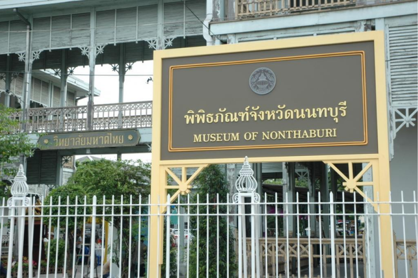
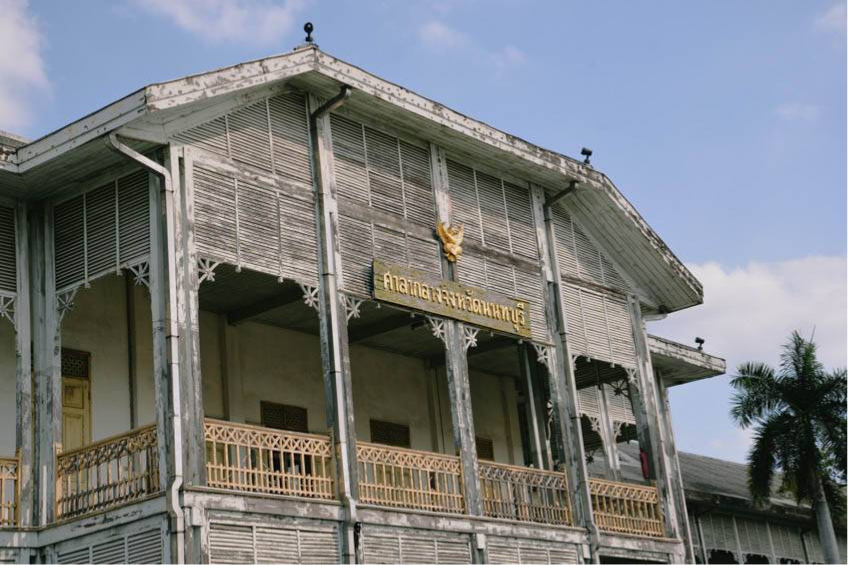
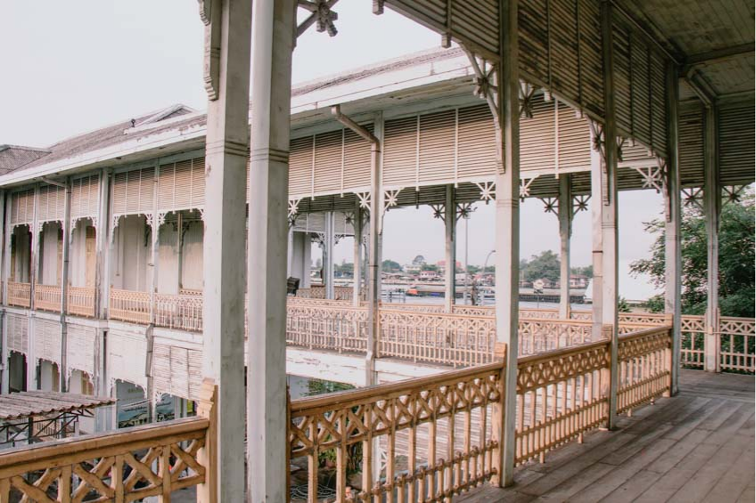
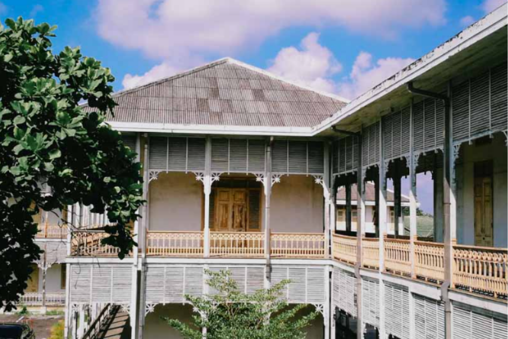

พิพิธภัณฑ์ จังหวัดนนทบุรี

พิพิธภัณฑ์จังหวัดนนทบุรี ตั้งอยู่ที่ ท่าน้ำนนทบุรี ตำบลสวนใหญ่ อำเภอเมือง จังหวัดนนทบุรี โดยเป็นอาคารเก่าแก่ที่สร้างขึ้นโดยกระทรวงยุติธรรม เมื่อปี พ.ศ.2453 และในช่วงปี พ.ศ.2471-2535 ก็ถูกใช้เป็นศาลากลางของจังหวัดนนทบุรี แต่ต่อมาภายหลังเมื่อมีการย้ายที่ทำการศาลากลางไปยังศูนย์ราชการจังหวัดนนทบุรีแห่งใหม่แล้ว เลยได้ใช้อาคารแห่งนี้มาเป็นที่ตั้งวิทยาลัยมหาดไทย จนถึงปี พ.ศ.2551

และหลังจากนั้นเทศบาลนครนนทบุรีก็ได้ทำเรื่องขอจัดตั้งศาลากลางจังหวัดหลังเก่าที่ ริมท่าน้ำนนท์แห่งนี้ ให้กลายมาเป็น พิพิธภัณฑ์จังหวัดนนทบุรี เพื่อไว้สำหรับเป็น แหล่งเรียนรู้เพื่อสืบสานจิตวิญญาณแห่งเมืองนนท์ แสดงเรื่องราวทางด้านประวัติศาสตร์และพัฒนาการของเมืองนนทบุรี ตั้งแต่ในอดีตมาจนถึงปัจจุบันเลย

โดยลักษณะของอาคารนั้น จะเป็นสถาปัตยกรรมแบบตะวันตก ที่มีการประยุกต์ให้เข้ากับภูมิอากาศเขตร้อนของไทย และหันหน้าออกสู่แม่น้ำเจ้าพระยา ซึ่งเป็นเส้นทางคมนาคมหลักในอดีต อาคารจะมีด้วยกัน 2 ชั้น มี 7 หลัง วางผังเป็นรูปสี่เหลี่ยมผืนผ้า เชื่อมต่อกันด้วยระเบียงทางเดินไม้ที่สร้างยื่นออกมารอบอาคาร ถือได้ว่ามีคุณค่าทางสถาปัตยกรรมและความสำคัญทางประวัติศาสตร์อย่างมาก กรมศิลปากรเลยมีการขึ้นทะเบียนอาคารหลังนี้ ให้เป็นโบราณสถานเมื่อปี พ.ศ.2524

เป็นอาคารที่มีทั้งเรื่องราวและความสวยงามในอดีตอย่างมาก แล้วยิ่งอยู่ริมแม่น้ำเจ้าพระยา ถ้ามองจากด้านแม่น้ำน่าจะสวยดึงดูดไม่น้อยเลย ถ่ายรูปออกมาต้องนึกว่าอยู่ในสมัยก่อนแน่นอน ใครชอบถ่ายรูปอาคารบ้านเรือเก่าแก่สวยๆ ที่ พิพิธภัณฑ์จังหวัดนนทบุรี เป็นอีกพิกัดที่ไม่ควรพลาดจริงๆ